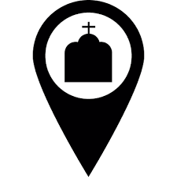

<ion-header>

  <!-- <ion-navbar>
    <ion-title>info</ion-title>
  </ion-navbar> -->

</ion-header>


<ion-content>

    <ion-slides pager>

        <ion-slide class="corsel-img">
          
          <h2>Católico PE</h2>
          <p>Vá a Igreja</p>
        </ion-slide>

        <ion-slide class="corsel-img">
          
          <h2>Localização</h2>
          <p>Encontre a igreja mais próxima</p>
        </ion-slide>

        <ion-slide class="corsel-img">
          
          <h2>Confissões</h2>
          <p>Veja os Horários e Locais de Confissões</p>

          <a (click)="goToTabsPage()">Continuar</a>
        </ion-slide>

      
    </ion-slides>

</ion-content>
